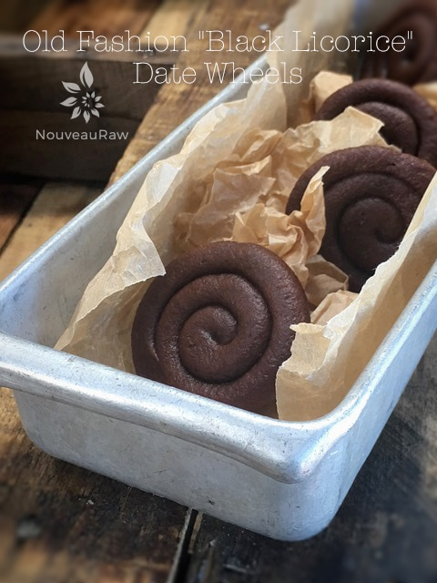

~ raw, vegan, gluten-free, nut-free ~
Ok, so these are not black, and they don’t contain licorice, BUT they TASTE just like black licorice! And trust me, you are looking at a black licorice expert. It is by far my all-time favorite candy, black licorice, and I have a long-time love affair.
You see, it started when I was in my mother’s womb, seriously. Through the duration of her pregnancy, she craved black licorice 24/7, and she ate it, 24/7. It’s in my blood. I used to tell people if you were to cut me open, my blood would run black.
The smell alone will put me into sensory overload. I do, however, realize that not everyone feels this way about black licorice, Bob, for instance. People either love it or hate it. Is there not enough hate in this world? Can’t we all just love it? hehe
Several years ago, as I attempted to clean up my diet, I had to turn my back on my beloved licorice. Sniff sniff. There isn’t anything good for you in those darn candies. They are typically made of; Brown sugar syrup, wheat flour, corn syrup, starch, licorice extract, salt, artificial and natural flavors, fractionated coconut oil, beeswax coating, and carnauba wax.
But today is a new day, and at 4:00 A.M., I woke up, staring up at the dark ceiling, and it hit me, “Why can’t I make black licorice out of my date bits recipe and add fennel…or anise… fennel?…. anise? What’s the difference?” I knew my mind wouldn’t rest until I had thoroughly researched this question. So I stumbled out into the living room and snuggled up on the couch, hoping that I wouldn’t wake up my true love.
After “thumbing” through site after site, learning all about anise, I knew what I had to do… use ground fennel seed. Why? Because that is what I had in the spice cabinet. Lol Fennel is actually very good for you! Fennel seeds are a rich source of dietary fiber. Much of this roughage is metabolically inert insoluble fiber, which helps increase the bulk of food by absorbing water throughout the digestive system and easing constipation.
Also, dietary fibers bind to bile salts (produced from cholesterol in the liver) and decrease its re-absorption in the colon, thus helping lower serum LDL cholesterol levels and eliminate stomach-ache and stimulate digestion. Enough research, let’s head to the kitchen!
Yields 38 candies
- 3 cups Medjool dates, pitted
- 1/4 cup water
- 2 Tbsp ground fennel seeds
Preparation:
- Have two dehydrator trays ready, fitted with the teflex sheet. Set aside.
- Remove the pits from the dates as you put them in the measuring cup.
- Be sure to inspect each date as you tear it in half to remove the pit. Mold and insect eggs can infect dried dates. I don’t mean to gross you out; you just need to be made aware of this.
- Place the dates in the food processor fitted with the “S” blade. Add the water and ground fennel. Process until the dates turn into a creamy paste.
- If the dates that you have are moist, you can start without the water. It’s better not to have it, but sometimes the dates are too dry to get a smooth paste.
- This step will take some patience, and you will need to stop the machine every once in a while to scrape the sides down.
- Once the paste is formed, using a rubber spatula, place the paste in a sturdy piping bag.
- Pipe the date wheels:
- Use a canvas or silicone piping bag for this recipe. You will be using a good amount of hand pressure to squeeze it out, and you don’t want a plastic bag to pop on you.
- When piping, this is an excellent time to call in your strong partner. Good hand strength is needed.
- Hold the piping bag tip about 1/4″ above the teflex sheet and slowly guide the lines of date paste into a spiral formation. Make it as little or as large as you want the candy piece.
- Keep constant pressure on the piping bag as you squeeze out the paste to ensure an even thickness of the line.
- After each completed candy, stop and retwist the piping bag, working all paste towards the tip. This will eliminate air bubbles in the bag and give you a solid grip.
- Dehydrate at 145 degrees (F) for 1 hour, then reduce to 115 degrees (F) for 8 hours (+/-).
- Check-in on them periodically, once they are dry enough, you will want to transfer them to a mesh sheet to speed up the drying process. It’s a long one, but well worth it.
- Continue drying for 6-8 hours or until they no longer have any stickiness to them.
- Once cooled, store in an airtight container, single-layered with wax paper in between layers.
Culinary Explanations:
- Why do I start the dehydrator at 145 degrees (F)? Click (here) to learn the reason behind this.
- When working with fresh ingredients, it is essential to taste test as you build a recipe. Learn why (here).
- Don’t own a dehydrator? Learn how to use your oven (here). I do, however honestly believe that it is a worthwhile investment. Click (here) to learn what I use.